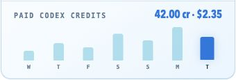

See your credit usage

Connect your workspace analytics to show your actual Codex credit usage from the last seven days, right in the monitor.
Who can connect?
Use an OpenAI workspace account with permission to view credit analytics, such as an owner, admin, or analytics viewer.
You’ll sign in on OpenAI’s page in the next window. Your login session stays on this Mac so the monitor can refresh your credit usage. The monitor doesn’t store your password.